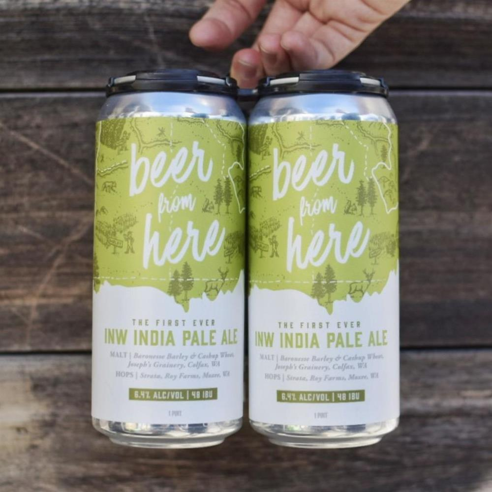

<link href="/node_modules/tiny-slider/dist/tiny-slider.css" rel="stylesheet" />
<link href="/node_modules/slick-carousel/slick/slick.css" rel="stylesheet" />
<link
  href="/node_modules/slick-carousel/slick/slick-theme.css"
  rel="stylesheet"
/>
<link
  href="/node_modules/bootstrap-icons/font/bootstrap-icons.css"
  rel="stylesheet"
/>
<link
  href="/node_modules/feather-webfont/dist/feather-icons.css"
  rel="stylesheet"
/>
<link href="/node_modules/simplebar/dist/simplebar.min.css" rel="stylesheet" />
<!-- Theme CSS -->
<!-- build:css @@webRoot/assets/css/theme.min.css -->
<link rel="stylesheet" href="assets/css/theme.css" />
<!-- endbuild -->

<main>
  <section class="mt-8">
    <div class="container">
      <div class="row">
        <div class="col-md-6">
          <div class="slider slider-for slick-initialized slick-slider">
            <div class="slick-list draggable">
              <div class="slick-track" style="opacity: 1; width: 3180px">
                <div
                  class="slick-slide"
                  data-slick-index="0"
                  aria-hidden="true"
                  tabindex="0"
                  style="
                    width: 620px;
                    position: relative;
                    left: 0px;
                    top: 0px;
                    z-index: 999;
                    opacity: 1;
                  "
                >
                  <div
                    class="zoom"
                    onmousemove="zoom(event)"
                    style="
                      background-image: url('images/products/product-single-img-1.jpg');
                      background-position: 83.7097% 94.3289%;
                    "
                  >
                    <!-- img -->
                    <!-- img -->
                  </div>
                </div>
              </div>
            </div>
          </div>
        </div>

        <div class="col-md-6">
          <div class="ps-lg-10 mt-6 mt-md-0">
            <!-- content -->

            <!-- heading -->
            <p class="mb-4 d-block">In-stock</p>
            <h1 class="mb-1">New INW IPA</h1>
            <p class="">The Freshest edition of The Grain Shed INWIPA</p>

            <div class="fs-4 mb-4">
              <!-- price --><span class="fw-bold text-dark">$32</span>
              <span class="text-muted">per can</span>
            </div>
            <button type="button" class="btn btn-primary mb-6">
              <i class="feather-icon icon-shopping-bag me-2"></i>Buy Online
            </button>

            <hr class="py-4" />

            <div class="d-flex flex-column">
              <div>
                <!-- img -->
                <!-- img -->
                
              </div>
              <div class="mt-4">
                <h1 class="mb-1 h4">The Grain Shed</h1>

                <div class="mt-2">
                  <p class="mb-1 lh-lg">
                    1026 E Newark Ave. Spokane, WA, 99202<br />
                    joel.williamson@thegrainshed.coop<br />
                    (509) 241-3853
                  </p>
                  <a href="/farmer.html">View Storefront</a>
                  <div class="small text-muted mt-4">
                    <span>ABOUT</span>
                  </div>
                  <p>
                    We specialize in exceptional beers made exclusively from
                    rare grains and ingredients that are locally grown and
                    malted right here in Spokane to be unique, flavorful and
                    incredibly drinkable. Along with our growers, we are working
                    to craft styles of beer unique to this magical grain-growing
                    utopia we call the Inland Northwest.
                  </p>
                  <iframe
                    class="mapBox rounded mt-2"
                    frameborder="0"
                    scrolling="no"
                    marginheight="0"
                    marginwidth="0"
                    id="gmap_canvas"
                    origsrc="https://maps.google.com/maps?width=520&amp;height=400&amp;hl=en&amp;q=100%20Esplanade%20Chico+(Foobar)&amp;t=h&amp;z=13&amp;ie=UTF8&amp;iwloc=B&amp;output=embed"
                    fixedsrc="https://maps.google.com/maps?width=520&amp;height=400&amp;hl=en&amp;q=100%20Esplanade%20Chico+(Foobar)&amp;t=h&amp;z=13&amp;ie=UTF8&amp;iwloc=B&amp;output=embed"
                    addrsrc="https://maps.google.com/maps?q=2100%20Esplanade%20Chico+(Copy+Cat)&amp;t=h&amp;z=13&amp;ie=UTF8&amp;iwloc=B&amp;output=embed"
                    src="https://maps.google.com/maps?q=47.649275816327,-117.39482559184&amp;t=h&amp;z=13&amp;ie=UTF8&amp;iwloc=B&amp;output=embed"
                  ></iframe>
                </div>
              </div>
            </div>
          </div>
        </div>
      </div>
    </div>
  </section>
</main>

<script src="node_modules/slick-carousel/slick/slick.min.js"></script>
<script src="assets/js/vendors/slick-slider.js"></script>
<script src="node_modules/tiny-slider/dist/min/tiny-slider.js"></script>
<script src="assets/js/vendors/tns-slider.js"></script>
<script src="assets/js/vendors/zoom.js"></script>
